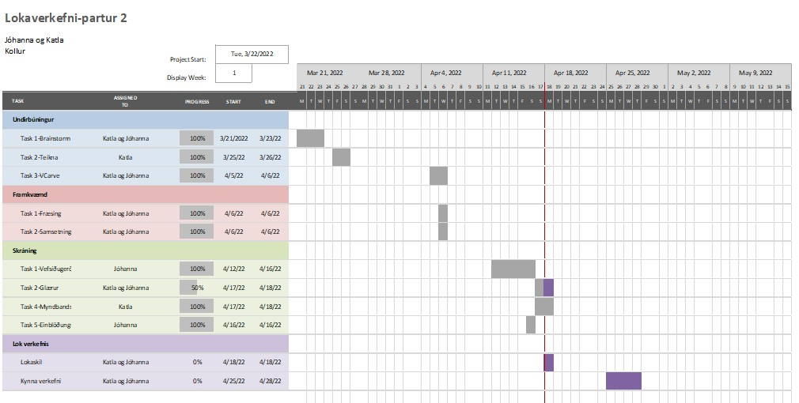
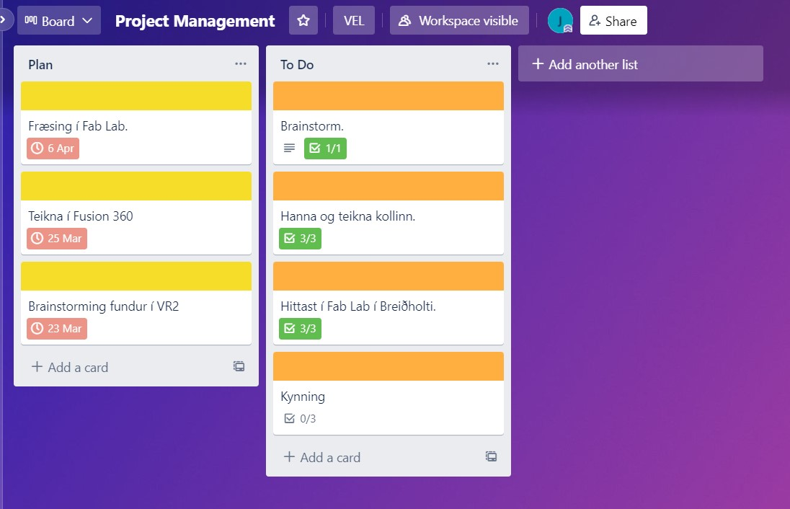

Lokaverkefni Jóhönnu og Kötlu
Verkefnalýsing
Lokverkefninu var skipt í tvo parta.
- Fræsing:
- Hópaverkefni: Velja á milli tveggja fræsiaðferða og hanna, teikna og fræsa. Það mátti nota ShopBot og 1500mm x 1500mm x 18mm krossvið eða fræsa mót í vax.
- Einstaklingsverkefni: Hver hópmeðlimur skráir sitt framlag til verkefnisins á sína heimasíðu.
- Verkefnastjórnun, skrásetning og kynningar:
- Á sameinglegu vefsvæði á að skrásetja hönnunarþætti, framkvæmd, verkefnastjórnun og skipulag, samsetningu og hönnunarskjöl.
- Nota aðferðir verkefnastjórnunar til að skipuleggja, skipta niður verkefnum og búa til tímaáætlun.
- Ákveða hönnunarvernd fyrir vöruna.
- Búa til einblöðung fyrir verkefnið.
- Búa til kynningarmyndband fyrir verkefnið fyrir vefsíðuna.
- Búa til glærukynningu um verkefnið sem á að halda fyrir bekkinn.
Hópurinn
Hópurinn samanstóð af Jóhönnu Lóu Ólafsdóttur og Kötlu Garðarsdóttur. Við erum báðar í vélaverkfræði.
Einstaklingsverkefnin má finna hér að neðan:
Jóhanna Lóa
Katla
Hugmyndaleit
Ein hugmynd sem okkur leist vel á var að búa til tröppur til að hægt sé að teygja sig upp í t.d. efri hillur í eldhúsi. Við fengum innblástur á netinu hjá ítölsku fyrirtæki, Modifile sem sérhæfir sig í hönnun og framleiðslu.
Framkvæmd í Fusion 360
Katla teiknaði hlutinn upp í Fusion 360. Áður enn hafist var handa við Fusion 360, var kollurinn rissaður upp á blað og stærðir ákveðnar. Kollurinn er gerður úr fimm pörtum sem síðan eru settir saman. Það tók lengasta tímann að teikna hliðarnar enda eru þær klárlega flóknustu hlutarnir. Hér að neðan má sjá fyrstu hliðina í Fusion.

Þar sem að hliðarnar eru eins var sá hlutur afritaður og "millistykkið" teiknað en það gefur kollinum meiri styrk og festist í efra þrepið og á hliðarnar. Hér má sjá mynd af því.

Nú átti bara eftir að teikna þrepin tvö og þá er kollurinn fullkláraður í Fusion 360.

Notast var við parametra fyrir allar stærðir til að auðvelt væri að bregðast við ef einhverju þyrfti að breyta.
Þegar teikningin var tilbúin voru allir partarnir lagðir á sama plan með því að velja Modify og Align skipanirnar í Fusion 360 og hlutarnir svo færðir til.
Því næst var farið í Create Sketch og einn hlutur valinn. Því næst Create → Project og restin valin. Þá var komin skissa af öllum hlutunum sem var vistuð sem DXF skrá og notuð í VCarve.
Framkvæmd í VCarve
Til þess að undirbúa Fusion 360 skrána fyrir fræsingu var forritið VCarve notað. Frí prufuútgáfa var sótt og og sett upp og í fartölvu. Næst var VCarve á fartölvunni tengt við VCarve hjá FabLab Reykjavíkur í Breiðholti með því að sækja MakerspaceID af heimasíðu FabLab Reykjavíkur. Það kom síðan í ljós að ekki var hægt að nota einkafartölvu og því var skjalið fært yfir í fartölvu sem FabLab á. Á myndinni fyrir neðan má sjá hvernig teikningin leit út á krossviðsplötunni. Vinnusvæðið í VCarve var 1500mm x 1500mm og efnisþykkt 18mm. Kennslumyndbandið um VCarve eftir Hafliða hjálpaði mjög mikið.

Þar sem spindlarnir á fræsinum eru hringlóttir og hönnunin inniheldur þó nokkur press-fit og þar af leiðandi 90° horn, þurfti að setja fillet á press-fit hornin. Hér var notað dog-bone fillet með 3.0 mm radíus. Stundum gekk illa að setja fillet á hornin en þá þurfti að sameina vigrana með línu, þ.e. velja hornið, hægrismella og velja Join Vectors With a Line.
Fyrst var Drilling Toolpath stillt og svo var 2D Profile Toolpath valið. Til að byrja með var 6mm downcut biti til að fræsa notaður fyrir eina umferð og 6mm upcut biti sá um rest. Speed var stillt á 10500 rpm og feed var stillt á 70mm/sec. Æskilegt er að chip load sé 0.02-0.2 mm. Nokkur tabs voru sett inn á teikninguna sem héldu hlutunum föstum meðan fræsirinn vann. Allir hlutarnir voru síðan brotnir laus með sporjárni og hamri og kollurinn settur saman. Að lokum var kollurinn settur saman.
Verkefnastjórnun
Áður en hafist var handa við framkvæmd verkefnisins voru nokkur atriði skipulögð, við skiptum niður verkefnum og gerðum tímaáætlun. Þá voru aðferðir verkefnastjórnunar nýttar. Jóhanna setti upp Gantt rit, vörður og Trello minnismiða.
Gantt Chart
Sett var upp Gantt Chart í Excel.
Ferli og vörður
Hér að neðan má sjá ferlið og vörður fyrir verkefnið.

Trello
Trello var notað til að gera minnismiða og skipulag.
Hönnunarvernd
Samkvæmt vefsíðu Hugverkastofunnar þarf hönnunin að vera ný og sérstæð til að möguleiki sé að hún njóti verndar. Hún þarf því að vera ótvírætt frábrugðin hönnun sem nú þegar er þekkt. Þar sem hönnun kollarins byggir á annarri hönnun er ekki möguleiki að sækja um hönnunarvernd fyrir þetta verkefni.
Einblöðungur
Myndbandskynning
Leitarorð og myndbönd
- Step stool
- DIY furniture
- Gantt Chart
- Trello calendar
- Milestones
VCarve undirbúningur linkur: https://www.youtube.com/watch?v=wGDx5PD0nTc
Skjöl
Til að fjá skjöl tengd verkefninu þarf að ýta á takkana hér að neðan.